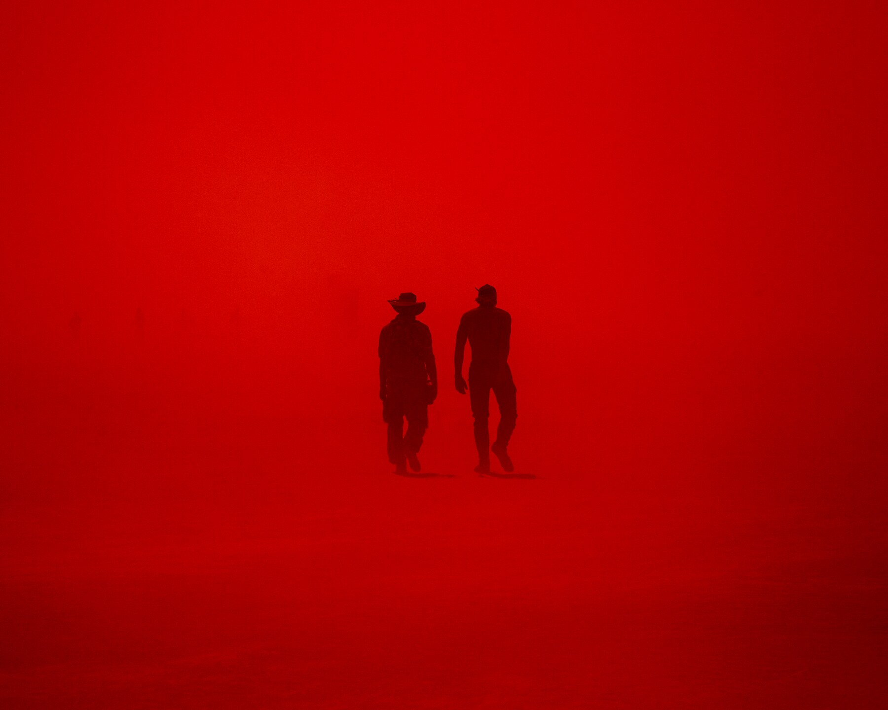
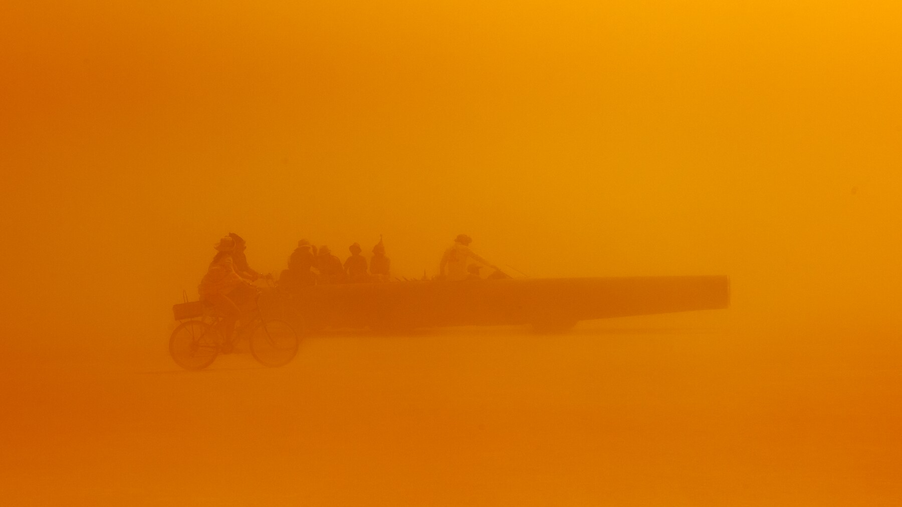

Tirages d'art, au studio-galerie de Carantec et en ligne.
La série Dust'in Kolor, tirages d'art à partir de 145 €.

Flying Car, la plus grande pièce exposée à la Brasserie Graphique. Chaque carte postale achetée, une chance de gagner. Tirage au sort le 24 décembre.
